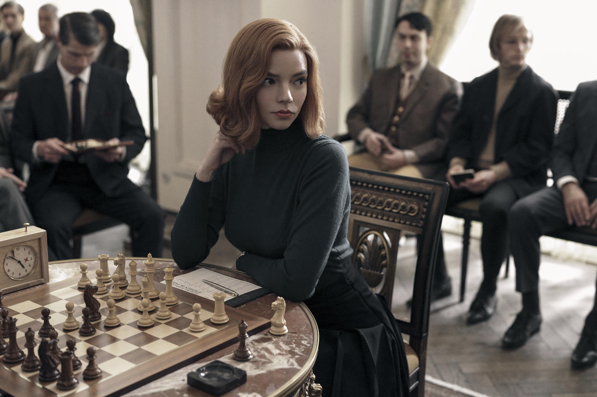
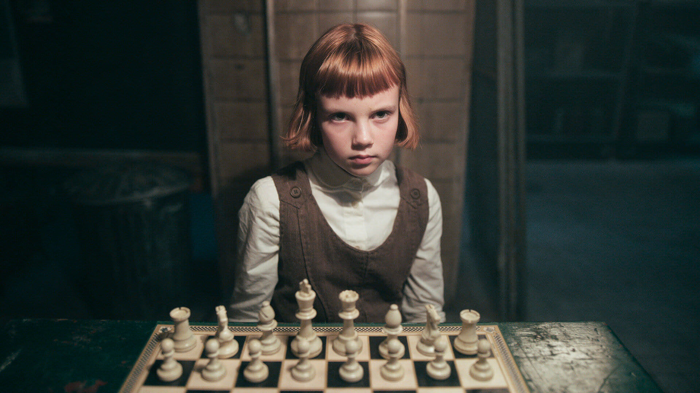

Queen's Gambit!
Queen's Gambit!
«Ход королевы» (англ. The Queen’s Gambit, с англ. — «Ферзевый гамбит») — американский драматический мини-сериал, основанный на одноимённом романе Уолтера Тевиса. Создан Скоттом Фрэнком и Алланом Скоттом по заказу Netflix. Премьера на Netflix состоялась 23 октября 2020 года. Проект стал самым популярным мини-сериалом в истории Netflix: за первые четыре недели его посмотрели 62 млн человек. Сериал заслужил всеобщее признание критиков за игру главной героини в исполнении Ани Тейлор-Джой, а также за работу оператора и качественную постановку. Он также получил положительные отзывы в шахматном сообществе и, как считается, способствовал возрождению общественного интереса к игре. Сериал завоевал две премии «Золотой глобус», в номинациях «Лучший мини-сериал или телефильм» и «Лучшая актриса в мини-сериале или телефильме» (Тейлор-Джой). Тейлор-Джой также выиграла премию «Выбор телевизионных критиков» в категории «Лучшая актриса в телефильме или мини-сериале» и премию Гильдии киноактёров США за лучшую женскую роль в телефильме или мини-сериале.
Сюжет

«Ход королевы» рассказывает историю шахматного вундеркинда-сироты Бет Хармон, которая стремится стать величайшей шахматисткой мира, но при этом борется с эмоциональными проблемами, а также с наркотической и алкогольной зависимостью. Действие сериала, названного в оригинале в честь шахматного дебюта, начинается в середине 1950-х годов и продолжается до 1960-x.
Девятилетняя Бет, потерявшая мать в автокатастрофе, попадает в приют для девочек в Лексингтоне, штат Кентукки, где знакомится с Джолин, энергичной и дружелюбной девушкой на несколько лет старше её, а также с Хелен Дирдорф, заведующей приютом, и мистером Шейбелом, уборщиком, который обучает Бет шахматам. Как это было принято в 1950-е годы, приют ежедневно выдает девочкам транквилизаторы, что приводит к зависимости Бет от лекарств.

Через несколько лет Бет удочеряет Альма Уитли и её муж. После адаптации в новом доме Бет записывается на шахматные турниры, хотя у неё нет никакого опыта выступлений. Она выигрывает одну партию за другой и заводит дружбу с несколькими шахматистами, в том числе с бывшим чемпионом штата Кентукки Гарри Белтиком, шахматным вундеркиндом Бенни Уоттсом и журналистом Таунсом. По мере того как Бет продолжает выигрывать партии и пожинает финансовые плоды успеха, она становится всё более зависимой от наркотиков и алкоголя и начинает терять контроль над своей жизнью.
В главных ролях
- Аня Тейлор-Джой — Элизабет (Бет) Хармон, шахматный вундеркинд, сирота;
- Айла Джонстон — юная Бет;
- Аннабет Келли — Бет в возрасте пяти лет;
- Томас Броди-Сангстер — Бенни Уоттс, чемпион США по шахматам;
- Гарри Меллинг — Гарри Белтик, чемпион штата Кентукки по шахматам;
- Мариэль Хеллер — Альма Уитли, приёмная мать Бет;
- Билл Кэмп — мистер Шейбел, сторож в приюте;
- Мозес Инграм — Джолин, подруга Бет по приюту;
- Кристиана Зайдель — Хелен Дирдоррф, заведующая приютом;
- Ребекка Рут — мисс Лонсдейл, учительница в приюте;
- Хлоя Пирри — Элис Хармон, мать Бет;
- Акимнжи Ндифорнен — мистер Фергюссон, санитар приюта;
- Патрик Кеннеди — Олстон Уитли, муж Альмы и приёмный отец Бет;
- Джейкоб Форчун-Ллойд — Д. Л. Таунс, шахматист;
- Марчин Дорочиньский — Василий Боргов, советский чемпион мира по шахматам.